Удобрение для комнатных растений: как выбрать и применять
Как выбрать удобрение для комнатных растений и построить систему ухода: свет, полив, дозировка и частота подкормок. Руководство для домашнего сада.
Читать статью ↗БАЗА ЗНАНИЙ СЕМЯЗДРАВ
Практические ответы о подкормках, дозировках и уходе за комнатными растениями и рассадой — без обещаний чудес и советов «на глаз».
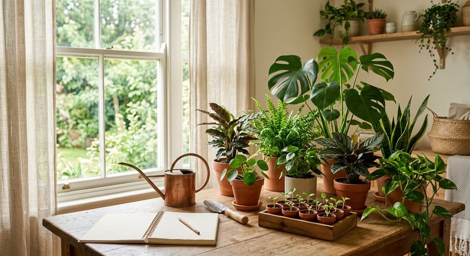
Как выбрать удобрение для комнатных растений и построить систему ухода: свет, полив, дозировка и частота подкормок. Руководство для домашнего сада.
Читать статью ↗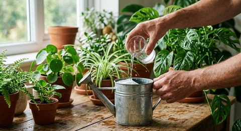
Как развести жидкое удобрение для комнатных растений: расчёт дозы на лейку и опрыскиватель, выбор воды и точное отмеривание без риска перекорма.
Читать статью ↗
Как часто подкармливать комнатные растения: ориентиры по фазам роста и сезонам, сигналы для паузы и зимний режим при отоплении и коротком дне.
Читать статью ↗
Удобрение для орхидей дома: как подкармливать фаленопсис по фазам роста и цветения, работать с корой и замачиванием и не накапливать соли. Пошагово.
Читать статью ↗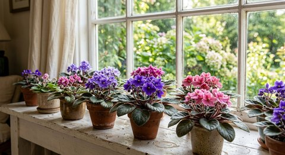
Удобрение для фиалок (сенполий) дома: какую подкормку выбирать, как вносить раствор, не смачивая листья и розетку, и как часто повторять. Разбираем по шагам.
Читать статью ↗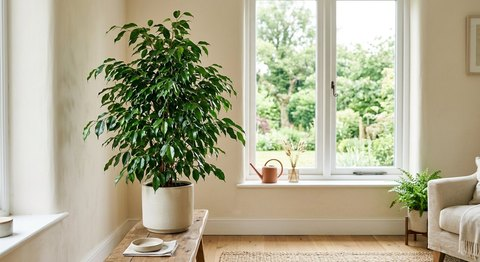
Удобрение для фикуса дома: сезонная подкормка, полив и свет, признаки нехватки питания и спокойный график ухода для крупных и малых растений.
Читать статью ↗
Как подкармливать монстеру и декоративно-лиственные растения: выбор удобрения, частота в период роста, роль света и объёма горшка. Пошагово и без лишнего риска.
Читать статью ↗
Удобрение для рассады дома: когда начинать подкормки, как дозировать раствор для молодых растений и почему свет важнее концентрации. Разбираем по этапам роста.
Читать статью ↗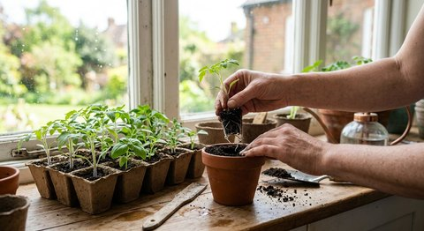
Подкормка рассады после пикировки: сколько ждать после пересадки сеянцев, какой раствор дать первым и как понять, что растение готово. Пошагово и спокойно.
Читать статью ↗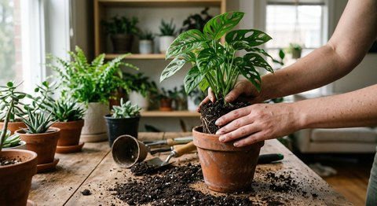
Подкормка комнатных растений после пересадки: почему первые недели удобрение не нужно и по каким признакам возвращаться к обычному графику. Сроки и правила.
Читать статью ↗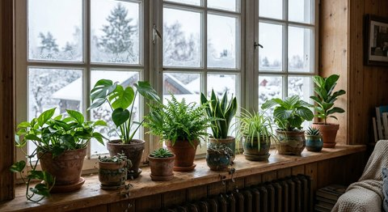
Уход за комнатными растениями зимой: полив и подкормка при коротком дне, сухом воздухе от отопления и холодных подоконниках. Зимний чек-лист.
Читать статью ↗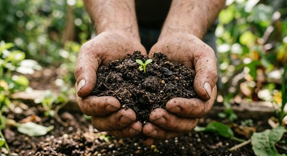
Весенний уход за комнатными растениями по чек-листу: осмотр после зимы, пересадка, возвращение полива и подкормок без ожогов от яркого света.
Читать статью ↗Подкормка цветущих комнатных растений без риска для бутонов: когда вносить удобрение и каких ошибок избегать до, во время и после цветения. Спокойно и по шагам.
Читать статью ↗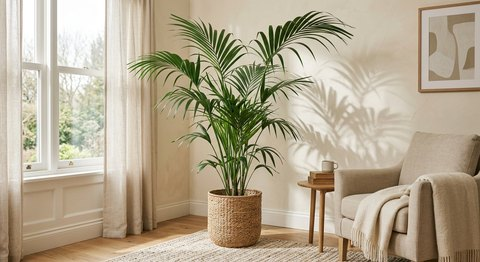
Удобрение для комнатных пальм: как подкармливать крупные растения в период роста и почему сухие кончики листьев — не всегда признак голода. Разбираем по шагам.
Читать статью ↗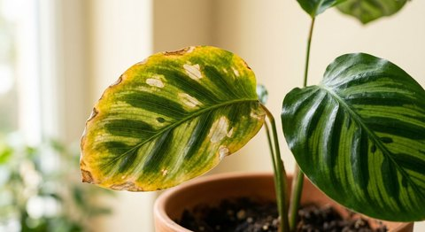
Почему желтеют листья у комнатных растений: пошаговая диагностика полива, корней, света и вредителей и план действий по каждой причине. Чек-лист осмотра.
Читать статью ↗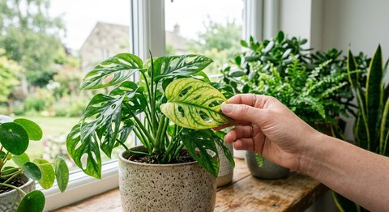
Признаки нехватки питания у комнатных растений: бледные листья и медленный рост. Как отличить голод от проблем с поливом и светом. Проверяем всё по шагам.
Читать статью ↗Перекорм растения удобрением: характерные признаки, пошаговая первая помощь с проливом субстрата и профилактика точной дозой и журналом. Действуем без паники.
Читать статью ↗Корневая и внекорневая подкормка растений: разница способов внесения, когда уместен полив, а когда опрыскивание, и ограничения методов дома.
Читать статью ↗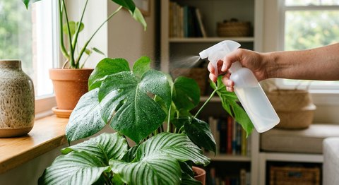
Можно ли опрыскивать комнатные растения удобрением: правила безопасного внекорневого внесения, концентрация и растения, которым это не подходит.
Читать статью ↗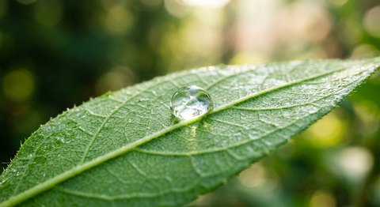
Что означает NPK в удобрении: разбираем азот, фосфор и калий на примере формулы 1,1–3,3–7,1 и учимся читать этикетку средства целиком. На живом примере состава.
Читать статью ↗Гуминовые и фульвовые кислоты в удобрениях: что это за вещества, чем отличаются и что реально умеют в грунте горшка без рекламных обещаний. Разбираем спокойно.
Читать статью ↗Янтарная кислота для комнатных растений: её роль в составе удобрений, как применять готовые растворы и чего не стоит ждать от одной добавки.
Читать статью ↗Аминокислоты и витамины в удобрении для растений: зачем они нужны помимо NPK, как их использует растение и как читать такие составы. На примере.
Читать статью ↗Органическое или минеральное удобрение для комнатных растений: сравниваем состав, скорость действия, удобство дозировки и риски перекорма. Для дома.
Читать статью ↗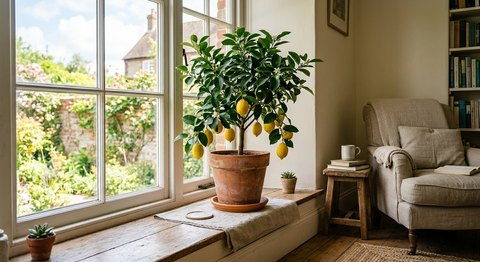
Комнатный лимон в квартире: уход, полив и подкормка по сезонам, требования к свету и влажности и причины сброса листьев при хорошем питании.
Читать статью ↗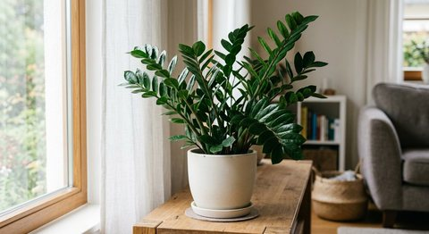
Как подкармливать замиокулькас дома без перекорма: признаки активного роста, полив, свет, пересадка, соли в субстрате и безопасная дозировка по этикетке.
Читать статью ↗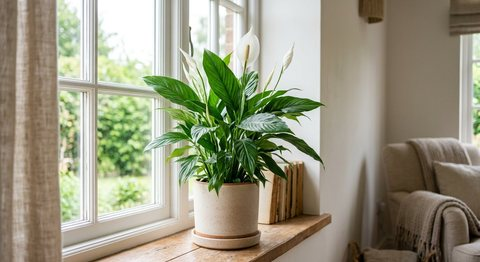
Как подкармливать спатифиллум дома: свет, влажный субстрат, осторожная дозировка, причины коричневых кончиков и отсутствия цветения. Схема по этикетке.
Читать статью ↗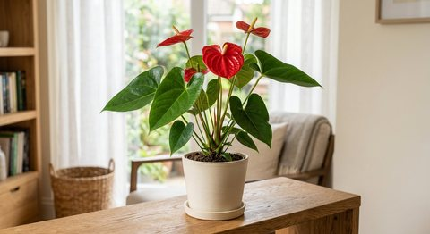
Как подкармливать антуриум в горшке: яркий рассеянный свет, рыхлый субстрат, полив, дозировка удобрения, соли и причины отсутствия новых цветоносов.
Читать статью ↗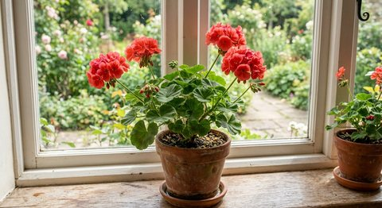
Как подкармливать пеларгонию в горшке на окне и балконе: свет, полив, прищипка, частота внесения удобрения и ошибки, из-за которых герань не цветёт.
Читать статью ↗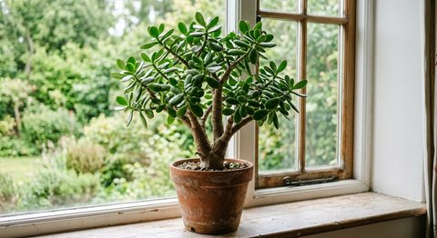
Как подкармливать толстянку без перелива и перекорма: яркий свет, сухой перерыв между поливами, пересадка, сезонная пауза и безопасная норма удобрения.
Читать статью ↗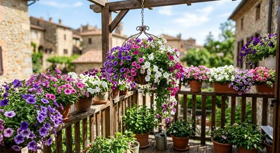
Как подкармливать петунию в контейнерах в течение сезона: солнце, объём кашпо, частый полив, жидкое удобрение по этикетке, удаление отцветших цветков.
Читать статью ↗Как подкармливать рассаду томатов на подоконнике: первый настоящий лист, пикировка, свет, полив, концентрация раствора и признаки перекорма сеянцев.
Читать статью ↗Как подкармливать рассаду перца без ожога корней: температура, свет, пикировка, влажный субстрат, первая подкормка и безопасная концентрация раствора.
Читать статью ↗Когда рассаде нужна первая подкормка после всходов: семядоли и настоящие листья, запас питания в грунте, свет, полив, пикировка и безопасная доза.
Читать статью ↗Почему рассада вытягивается и падает: недостаток света, тепло, загущение и перелив. Что исправить сразу, как пикировать томаты и когда подкормка не поможет.
Читать статью ↗По этому запросу статей не найдено. Попробуйте другое слово.
ПОДКОРМКА ДЛЯ ДОМАШНЕГО САДА
Состав, применение и актуальная карточка товара — на странице продукта.